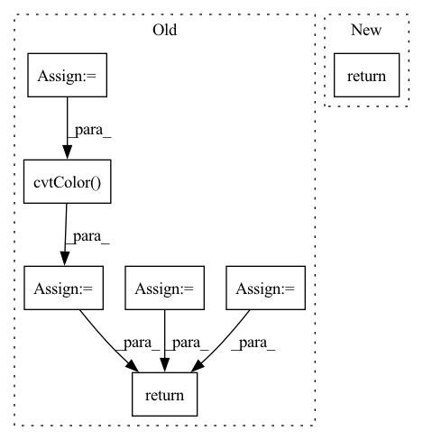

Pattern ID :30878

Before Change
idx: int):
img_path = str(self.img_paths[idx])
raw_img = cv2.imread(img_path)
img = cv2.cvtColor(raw_img, cv2.COLOR_BGR2RGB)
mask_path = str(self.mask_paths[idx])
mask = cv2.imread(mask_path)
mask = cv2.cvtColor(mask, cv2.COLOR_BGR2RGB)
if self.augs:
sample = self.augs(image=img, mask=mask)
img = sample["image"]
mask = sample["mask"]
return img, raw_img, mask
def __len__(self) -> int:
After Change
sample = self.augs(image=img)
sample["img_path"] = self.img_paths[idx]
return sample
def __len__(self) -> int:
In pattern: SUPERPATTERN
Frequency: 3
Non-data size: 7
Instances
Fragment ID: 90988589
Project Name: taikiinoue/stad
Commit Name: 263b80dac382e9786dc7af6f29152ea79b2336cc
Time: 2020-08-01
Author: taikiinoue45@gmail.com
File Name: stad/datasets/mvtec.py
M Class Name: MVTecDataset
N Class Name: MVTecDataset
M Method Name: __getitem__(2)
N Method Name: __getitem__(2)
M Parent Class: Dataset
N Parent Class: Dataset
M File Name: stad/datasets/mvtec.py
N File Name: stad/datasets/mvtec.py
M Start Line: 30
M End Line: 43
N Start Line: 17
N End Line: 24
'>
Before Change
image = cv2.cvtColor(image, cv2.COLOR_RGB2BGR)
image = torch.from_numpy((image / 255).transpose(2, 0, 1)).unsqueeze(0).float()
if prev_mask is None:
mask = torch.zeros_like(image[:, :1, :, :])
else:
logger.info("InteractiveSeg run with prev_mask")
mask = torch.from_numpy(prev_mask / 255).unsqueeze(0).unsqueeze(0).float()
pred_probs = self.predictor(image, clicks, mask)
pred_mask = pred_probs > 0.5
pred_mask = (pred_mask * 255).astype(np.uint8)
// Find largest contour
// pred_mask = only_keep_largest_contour(pred_mask)
// To simplify frontend process, add mask brush color here
fg = pred_mask == 255
bg = pred_mask != 255
pred_mask = cv2.cvtColor(pred_mask, cv2.COLOR_GRAY2BGRA)
// frontend brush color "ffcc00bb"
pred_mask[bg] = 0
pred_mask[fg] = [255, 203, 0, int(255 * 0.73)]
pred_mask = cv2.cvtColor(pred_mask, cv2.COLOR_BGRA2RGBA)
return pred_mask
After Change
)
mask = masks[0].astype(np.uint8) * 255
// TODO: how to set kernel size?
kernel_size = 9
mask = cv2.dilate(
mask, np.ones((kernel_size, kernel_size), np.uint8), iterations=1
)
// fronted brush color "ffcc00bb"
res_mask = np.zeros((mask.shape[0], mask.shape[1], 4), dtype=np.uint8)
res_mask[mask == 255] = [255, 203, 0, int(255 * 0.73)]
res_mask = cv2.cvtColor(res_mask, cv2.COLOR_BGRA2RGBA)
return res_mask
'>
Fragment ID: 90988648
Project Name: sanster/lama-cleaner
Commit Name: a6aec566d963e67c17c0871dca1c89d26e1cdcaa
Time: 2023-04-06
Author: cwq1913@gmail.com
File Name: lama_cleaner/plugins/interactive_seg.py
M Class Name: InteractiveSeg
N Class Name: InteractiveSeg
M Method Name: forward(4)
N Method Name: forward(4)
M Parent Class: BasePlugin
N Parent Class: BasePlugin
M File Name: lama_cleaner/plugins/interactive_seg.py
N File Name: lama_cleaner/plugins/interactive_seg.py
M Start Line: 242
M End Line: 264
N Start Line: 48
N End Line: 75
'>
Before Change
idx: int):
img_path = str(self.img_paths[idx])
raw_img = cv2.imread(img_path)
raw_img = raw_img[100:1050, :, :]
img = cv2.cvtColor(raw_img, cv2.COLOR_BGR2RGB)
mask_path = str(self.mask_paths[idx])
mask = cv2.imread(mask_path)
mask = mask[100:1050, :, :]
mask = cv2.cvtColor(mask, cv2.COLOR_BGR2RGB)
if self.augs:
sample = self.augs(image=img, mask=mask)
img = sample["image"]
mask = sample["mask"]
return img, raw_img, mask
def __len__(self) -> int:
After Change
sample = self.augs(image=img)
sample["img_path"] = self.img_paths[idx]
return sample
def __len__(self) -> int:
'>
Fragment ID: 90988646
Project Name: taikiinoue/stad
Commit Name: 263b80dac382e9786dc7af6f29152ea79b2336cc
Time: 2020-08-01
Author: taikiinoue45@gmail.com
File Name: stad/datasets/somic.py
M Class Name: SomicDataset
N Class Name: SomicDataset
M Method Name: __getitem__(2)
N Method Name: __getitem__(2)
M Parent Class: Dataset
N Parent Class: Dataset
M File Name: stad/datasets/somic.py
N File Name: stad/datasets/somic.py
M Start Line: 29
M End Line: 44
N Start Line: 16
N End Line: 23